Which transcription factors explain the open chromatin, and are they bound?
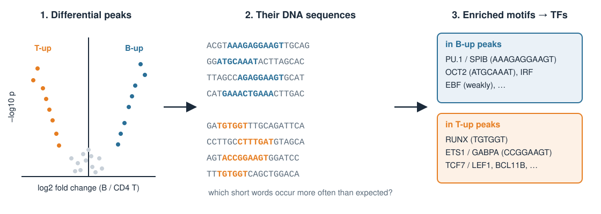
Differential accessibility gave us thousands of peaks that are more open in B cells than in CD4 T cells, and the reverse. A list of peaks is not yet biology: which transcription factors (TFs) open these regions?
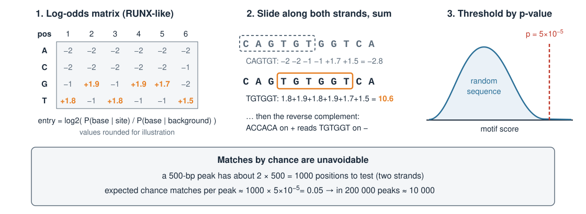
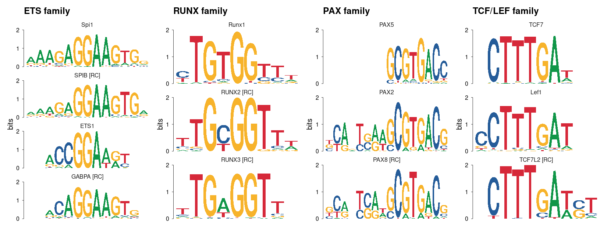
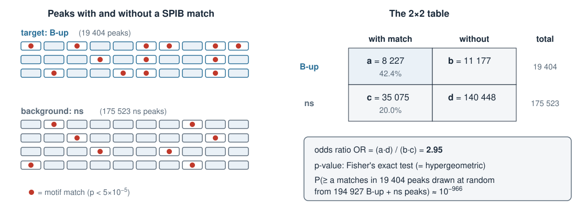
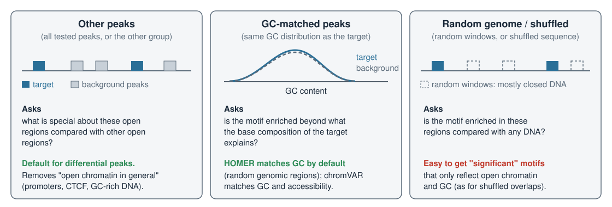
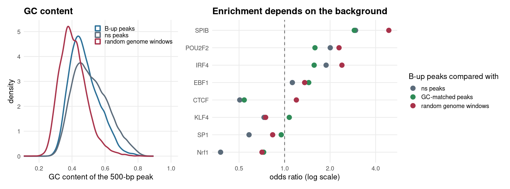
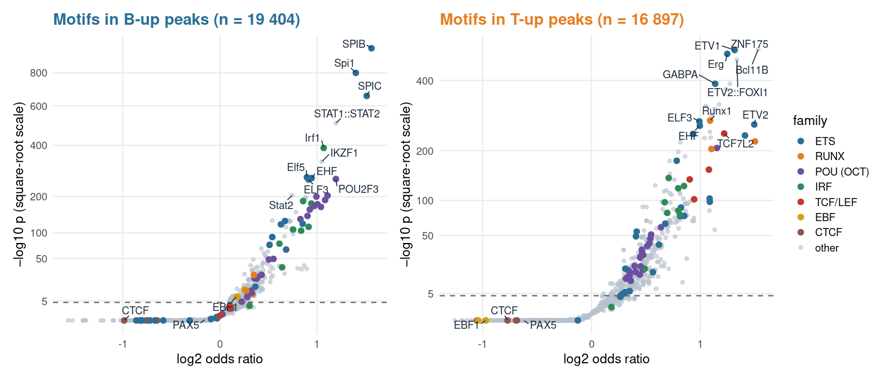
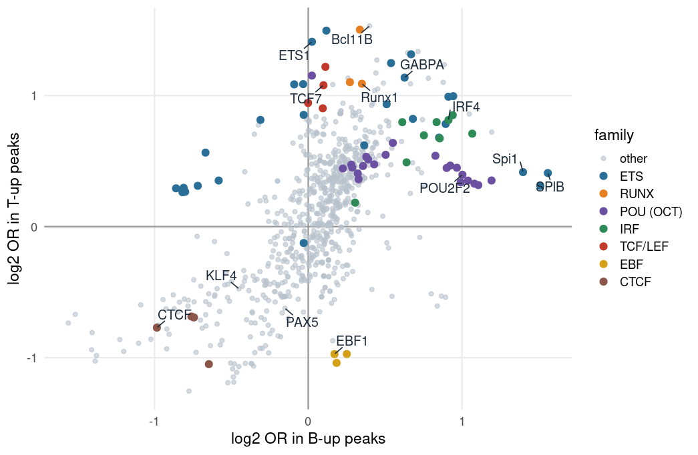
| B-up | T-up | |
|---|---|---|
| motifs tested | 879 | 879 |
| enriched at BH FDR 5% (OR > 1) | 511 | 507 |
| enriched at Bonferroni 5% (p < 0.05 / 879 = 5.7 × 10⁻⁵) | 361 | 432 |
| strongest odds ratio | 2.95 (SPIB) | 2.89 (BCL11B) |
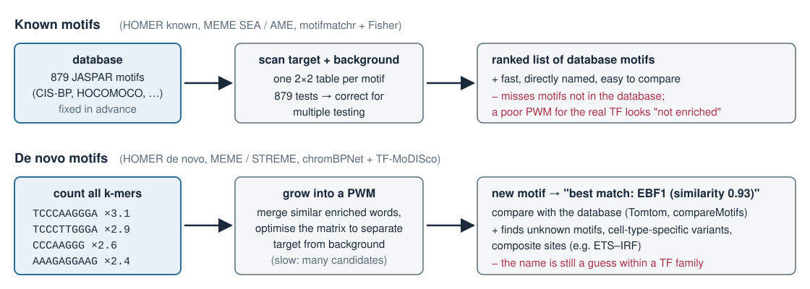
# HOMER: known + de novo motifs, 200 bp at the peak centre,
# GC-matched random genomic background (default) ...
findMotifsGenome.pl b_up.bed hg38.fa homer_b_up/ -size 200 -p 8
# ... or the saved ns peaks as background for differential peaks
findMotifsGenome.pl b_up.bed hg38.fa homer_bg/ -size 200 -bg ns.bed -p 8
# MEME suite: known motifs (SEA) and de novo (STREME) vs the saved ns peaks
bedtools getfasta -fi hg38.fa -bed b_up.bed > b_up.fa
bedtools getfasta -fi hg38.fa -bed ns.bed > ns.fa
sea --p b_up.fa --n ns.fa --m JASPAR2024_CORE_vertebrates.meme
streme --p b_up.fa --n ns.fa --dna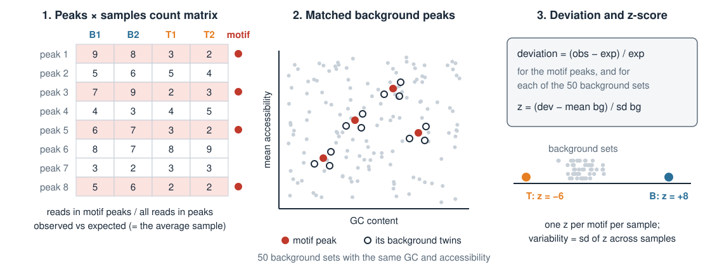
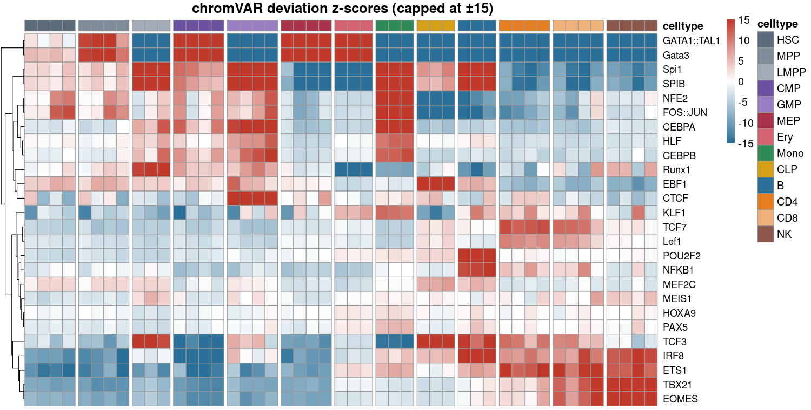
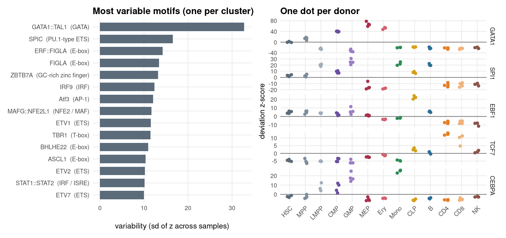
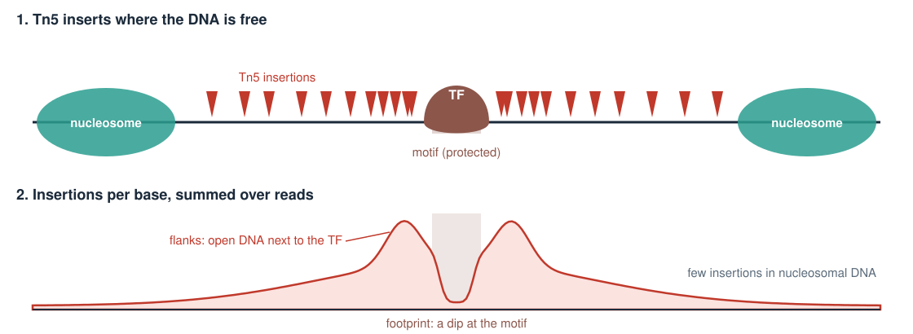
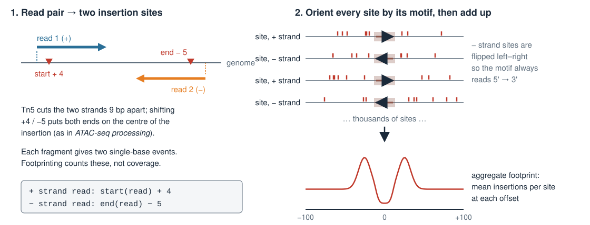
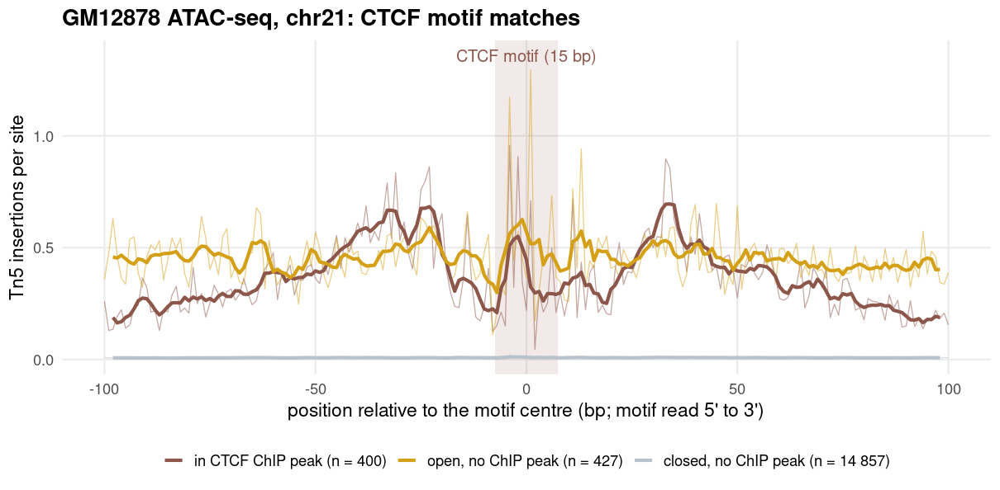
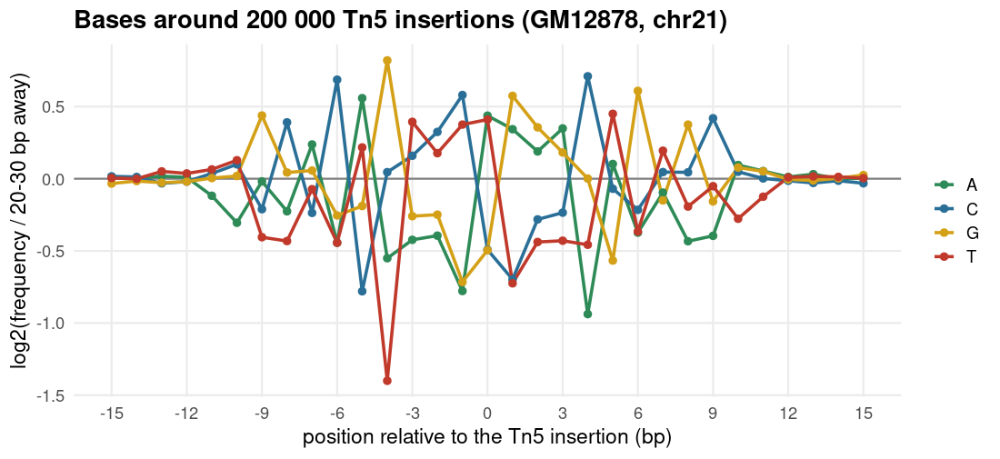
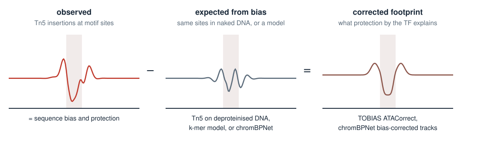
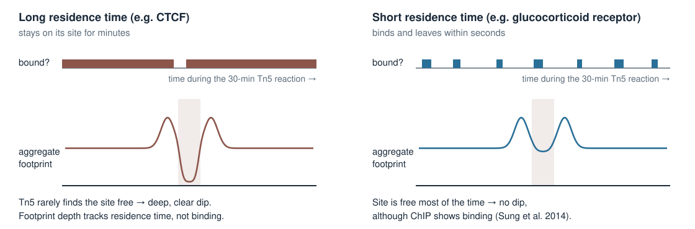
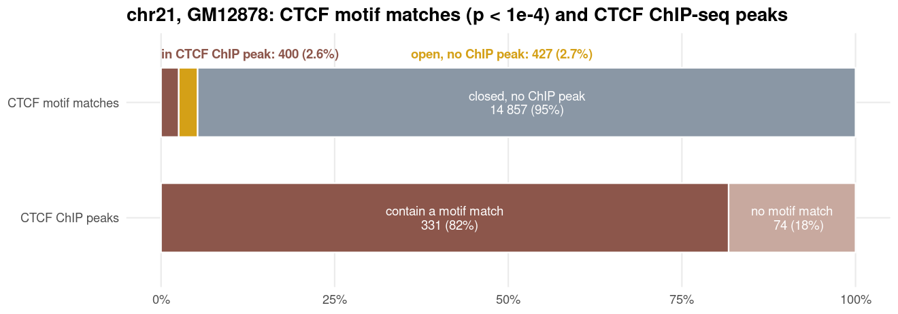
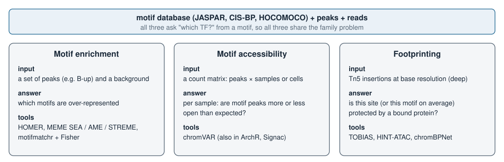
| idea | key fact |
|---|---|
| motif match | PWM log-odds score above a p-value threshold; ~5% of 500-bp peaks match any motif by chance |
| databases | JASPAR, CIS-BP, HOCOMOCO; families share motifs, so a motif names a family |
| enrichment | 2×2 table: target vs background × match vs no match; odds ratio; Fisher = hypergeometric |
| background | decides the question; tested ns peaks for differential sets; match GC; random genome inflates |
| multiple testing | ~900 motifs: BH or Bonferroni, then rank by effect size and group by family |
| de novo | find enriched words, build a PWM, compare with the database (HOMER, STREME, Tomtom) |
| chromVAR | per-sample deviation of motif peaks vs GC/accessibility-matched background; z-score; variability; single cells |
| footprint | dip of Tn5 insertions at a bound motif, high flanks; aggregate over oriented sites |
| caveats | Tn5 sequence bias makes fake footprints (correct: TOBIAS, chromBPNet); short residence time leaves none |
Not required reading and not examined. For those who want the primary literature.